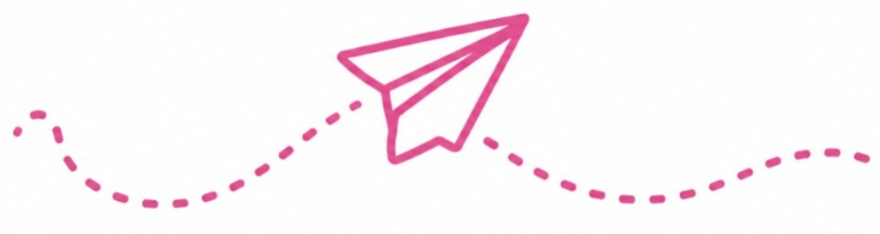
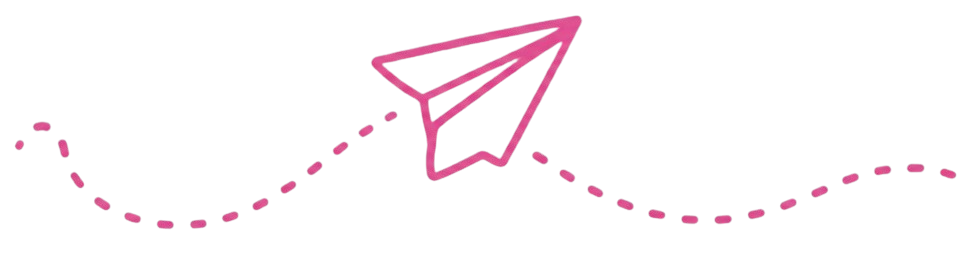

Creative Makers
Imagine it. Create it. Share it.
Creative Makers is where children explore their imagination through art, design, and hands-on crafts. From painting and DIY projects to decorating and upcycling, kids learn to express themselves, build confidence, and turn everyday materials into something meaningful.


Children Explore
Crafts & DIY
Mixed Media Art
Design & Decorate
Upcycle & Reuse
Skills Children Naturally Build
- Creativity & Imagination
- Self-expression
- Focus & patience
- Confidence
- Problem solving
Children Grow
 Shape the Experience
Shape the Experience
Children bring their own ideas, choose projects that excite them, and help shape what the group creates together. Every session leaves room for curiosity, collaboration, and proud moments of “I made this!”
Making an Impact
Creative work doesn’t stay on the table — children share art with the community, gift handmade projects, and learn that small creations can brighten someone’s day.
What Parents Should Know
Sessions blend guided projects with open creative time. Children explore different materials, work individually and in small groups, and share what they make at the end of each experience.
We provide paints, paper, craft supplies, and safe tools. Children are encouraged to bring found objects for upcycling projects. Aprons and workspace covers help keep messes manageable.
All activities are age-appropriate with adult guidance. Scissors, glue, and paints are introduced with clear safety instructions. Small group sizes ensure every child gets attention and support.
Creative Makers runs as part of Bright Dreamers experiences throughout the year. Visit our Get Involved page or contact us to learn about upcoming sessions, age groups, and how to register your child.
Every child has a creative spark. We help them set it free.

Learn More About This Experience